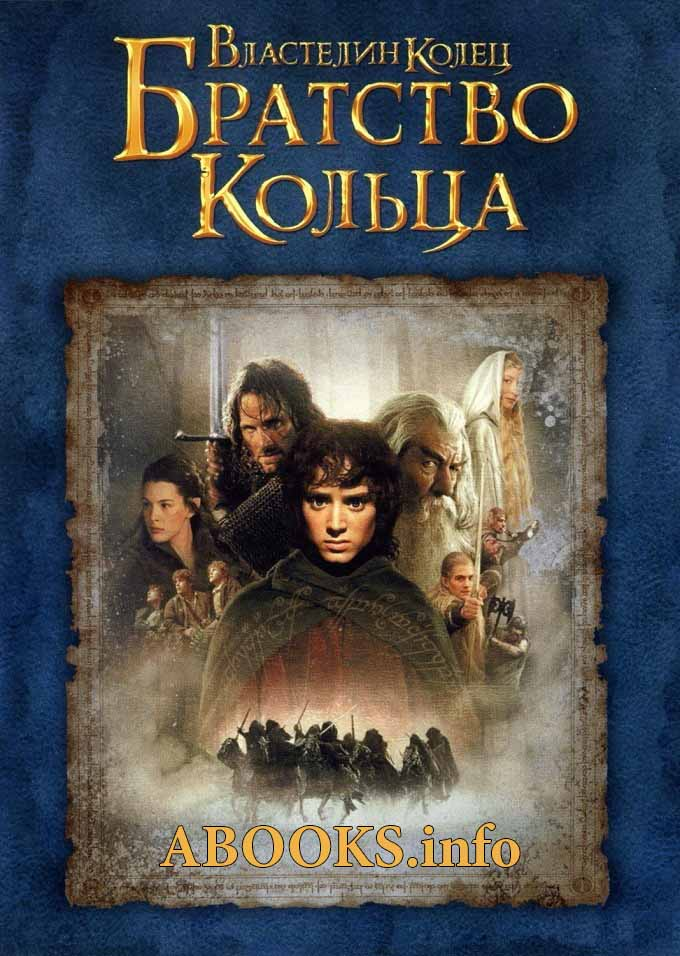

История написания серий книг о Гарри Поттере
Издание первой части было в далеком 1997 году, а зарождение идеи и написание рукописи приходятся на 1990. Тогда еще совсем юная Джоан Роулинг следовала по маршруту Манчестер-Лондон и долго ожидала задержанного рейса. Именно в ходе скучного времяпровождения в аэропорту девушке и пришла идея истории о маленьком маге. Она продумала основные сюжетные линии, но даже не имела возможности их записать – с собой не было ручки, а застенчивость не позволила одолжить у кого-то из пассажиров. Поэтому вернувшись домой, Джоан сразу же принялась записывать свои задумки. Но путь появления первого романа Джоан Роулинг о Гарри Поттере был не так прост. Прежде чем за издание книги взялось издательство Bloomsbury автору отказали 12 издательств. Ну а после выхода – неимоверный успех, огромный тираж, новые части, награды и фильмы. История о маленьком волшебнике круто изменила жизнь писательницы. Она смогла выбраться из маленького городка, забыть о бедности, дать меленькой дочери все, на что ранее не хватало средств, и стать одной из самых известных и продаваемых писательниц Британии.

История написания серий книг о Кольце Всевластья
Изначально Толкин не собирался писать продолжение к «Хоббиту» (роман «Властелин колец» фактически является таким продолжением). Однако 15 ноября 1937 года во время обеда со Стэнли Анвином, владельцем издательства, опубликовавшего «Хоббита», Толкин получил предложение представить для рассмотрения другие произведения. Рецензент издательства отклонил присланный «Сильмариллион», хотя отозвался о нём положительно. Ободрённый этим Толкин начал писать продолжение «Хоббита» и уже 16 декабря 1937 года в письме к издателю сообщил о первой главе новой книги.
Целью Толкина было создать английский эпос. Толкин был оксфордским филологом, хорошо знакомым со средневековымимифами Северной Европы, такими как «Сага о Хервер», «Сага о Вёльсунгах», «Беовульф», а также с другими староскандинавскими, староанглийскими и средневековыми английскими текстами. «Властелин колец» был вдохновлён и другими литературными источниками, например, легендами Артуровского цикла и карело-финским эпосом «Калевала». По мнению Толкина, англосаксам остро не хватало эпоса подобных масштабов, артуровский миф он считал неподобающей заменой из-за его явных кельтских, а не англосаксонских, корней..

История написания серий книг о Метро
Публиковать книгу в интернете я начал для того, чтобы донести до читателей плоды своих трудов — текст. Для меня вопрос продаж стоял далеко не на первом месте, я вообще не думал об этом.
Мне условно были нужны сегодняшние лайки: мне кажется, изначальный импульс любого творческого человека в первую очередь — желание быть оценённым, получить какой-то читательский, слушательский или зрительный фидбэк. Гордыня — это и есть тот самый драйвер, который должен вести к свершениям любого творческого человека.
Часть авторов и режиссёров оказываются соблазнёнными деньгами, которые можно заработать; мне кажется, это неправильный драйвер. Идти от одного произведения к следующему, заработать на нём и думать, как это сделать более эффективно, очень портит качество произведений.